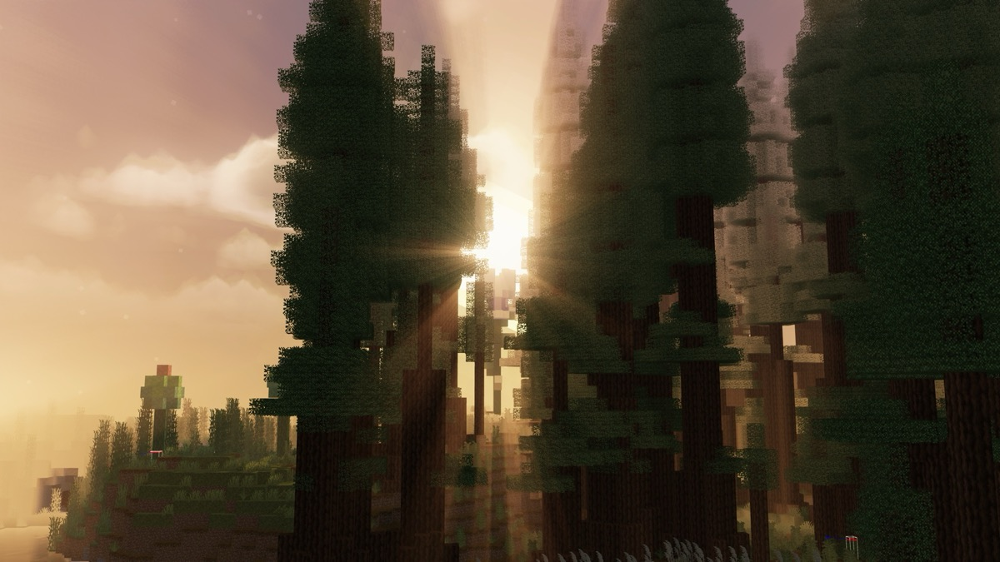
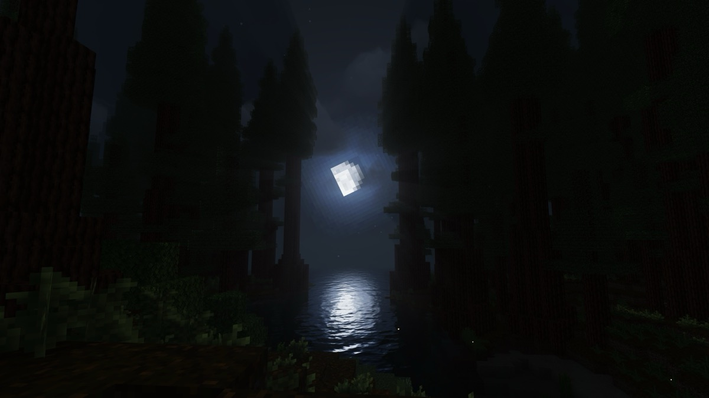
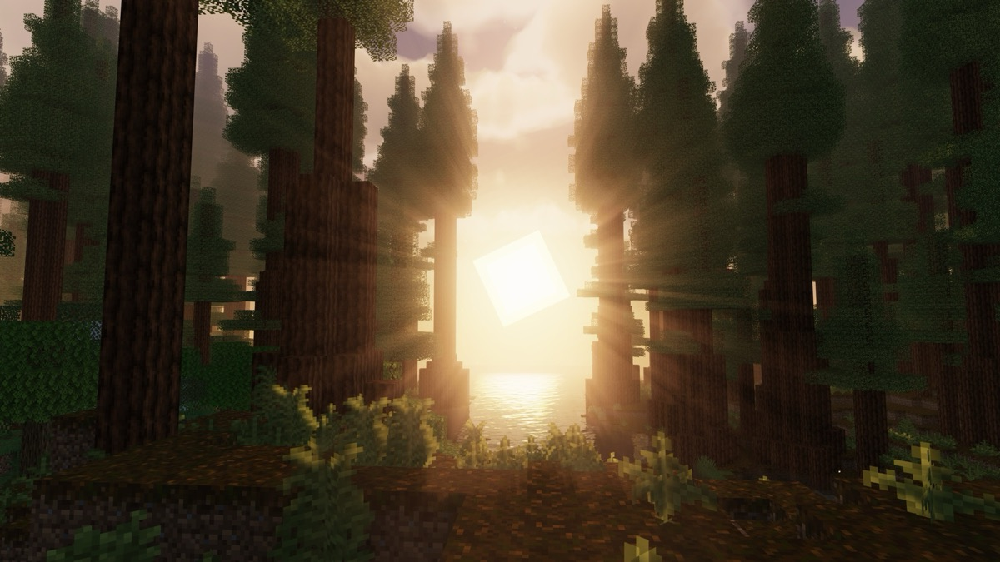
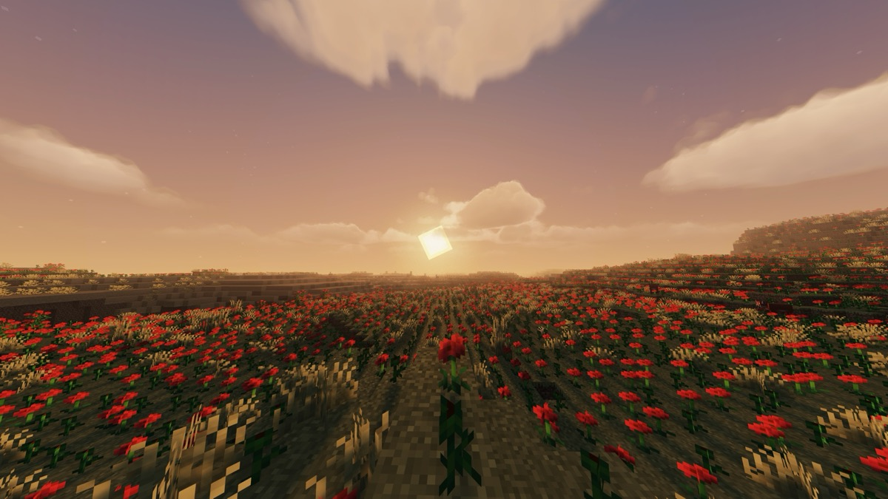
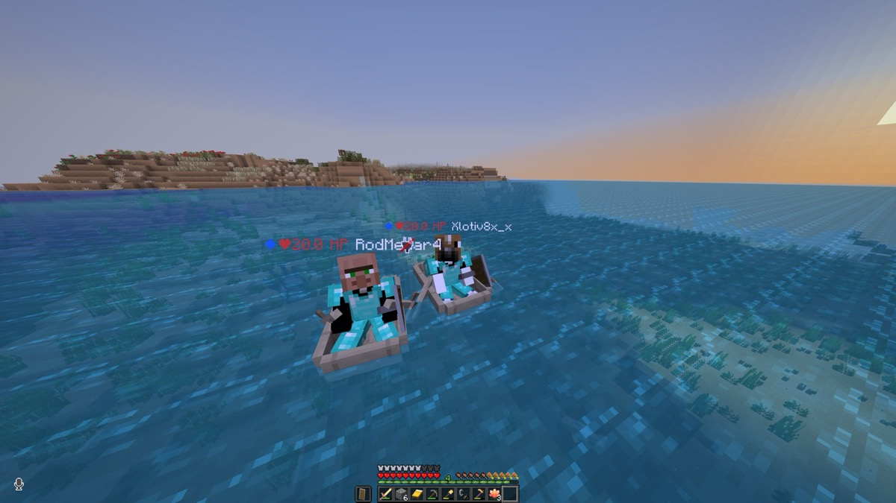
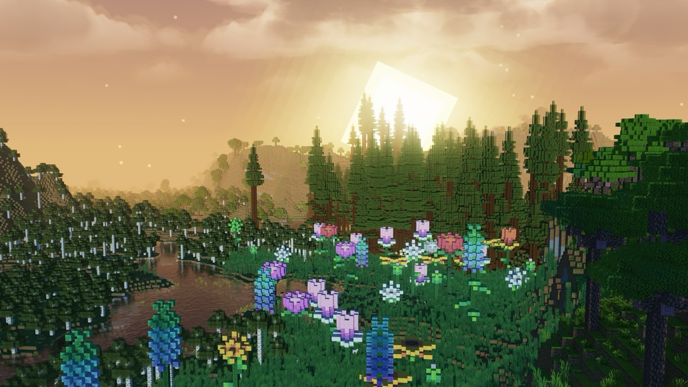

Minecraft / Worlds
Worlds I’ve created.
A few places and moments from my Minecraft worlds, from quiet forests to adventures with friends.






Minecraft / Worlds
A few places and moments from my Minecraft worlds, from quiet forests to adventures with friends.





